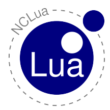

Github: http://github.com/fsantanna/
Twitter: https://twitter.com/_fsantanna
Céu provides "Structured Synchronous Reactive Programming", a safe and deterministic concurrency model with side effects.
Reactive applications interact continuously with the environment and are mostly guided through input events from it.
Céu can be described as a reactive, imperative, concurrent, synchronous, and deterministic language.
Website: http://ceu-lang.org/ (you can try Céu online!)
Git project: https://github.com/fsantanna/ceu/
traverse construct, a logo turtle interpreterpar/hor constructLuaGravity is a reactive language that implements the synchronous approach for concurrency. It is based on Esterel and FrTime, two synchronous reactive languages, the former having an imperative style, the latter being functional. LuaGravity is implemented as a set of runtime extensions to the Lua language.
2009: SBLP conference paper --- "LuaGravity: a Reactive Language based on Implicit Invocation" --- [ pdf ]
2009: MSc dissertation --- "A Synchronous Reactive Language based on Implicit Invocation" --- [ pdf ]

NCL is declarative language that provides several facilities for authoring a complete hypermedia document with synchronization relationships among its components. NCL is used on Brazilian Digital TV middleware Ginga.
NCL was created by Prof. Luiz Fernando Gomes Soares, and is maintained by the TeleMidia Laboratory at PUC-Rio.
NCL is scriptable in Lua through the so called NCLua objects.
I have created the NCLua specification with Prof. Renato Cerqueira and Prof. Luiz Fernando Gomes Soares, and have implemented the first public release.
2009: DocEng conference paper --- "Relating Objects with Imperative Code and Objects with Declarative Code through NCL Glue Language" --- [ pdf | site ]
2009: Book chapter --- "Programando com Objetos NCLua (Programando em NCL 3.0)" --- [ site ]
2009: Webmedia short course (book chapter) --- "Desenvolvimento de Aplicações Declarativas para TV Digital no Middleware Ginga com Objetos Imperativos Lua" --- [ pdf | site ]
2008: Webmedia conference paper --- "NCLua - Objetos Imperativos Lua na Linguagem Declarativa NCL" --- [ slides | pdf | site ]
2008: Norma ABNT --- "Digital terrestrial television, Data coding and transmission specification for digital broadcasting, Part 2: Ginga-NCL for fixed and mobile receivers, XML application language for application coding" --- [ site ]
2008-2011: PUC-Rio/CCE postgraduate --- "Desenvolvimento de Aplicações e Conteúdo para TV Digital em Ginga-NCL" --- [ site ]
2009: Lua Workshop --- "Aplicações interativas para a TV digital brasileira" --- [ slides | video | site ]